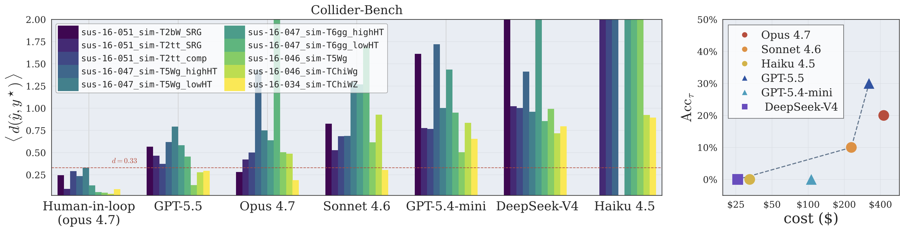
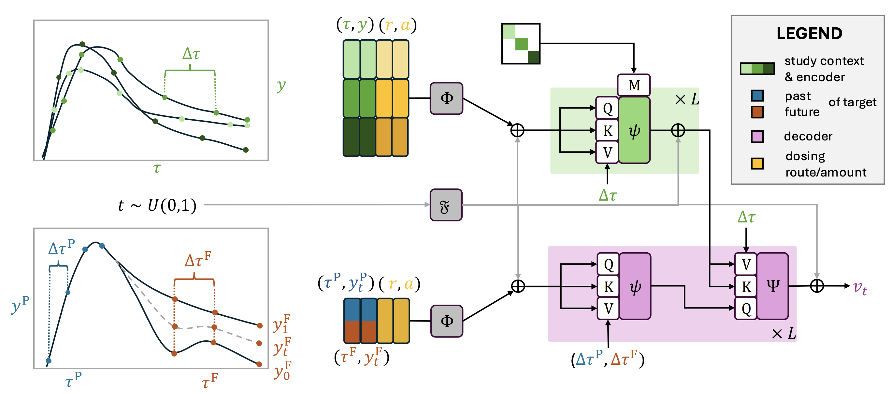

I build generative models and AI agents for scientific discovery, with applications ranging from collider physics and molecular design to pharmacokinetics and cosmology.
I am a research scientist working on machine learning for scientific discovery. My background is in theoretical particle physics, and my current work focuses on generative models, foundation models, and AI agents for complex scientific data.
A central theme of my research is building models that do more than fit data: they should generate realistic scientific systems, quantify uncertainty, and help automate parts of the scientific workflow. I have worked on generative models for collider events, foundation models trained on real Large Hadron Collider data, neural scaling laws for jet generation, and in-context models for pharmacokinetics.
More recently, my work has expanded toward agentic systems for science, including LLM-guided molecular design, autonomous agents for collider-physics analysis, and flow-based generative models for cosmological structure.
I am currently based at the New High Energy Theory Center at Rutgers University.
Most AI approaches to molecular design optimize for promising structures first and worry about synthesis later. My Chemical Harness builds synthesizability into the search process from the start. Instead of generating molecules in isolation, the system evolves synthetic routes made from purchasable building blocks and validated reaction steps.
The LLM acts as a strategy layer on top of trusted chemistry software. It proposes high-level search directions — such as which reaction families, molecular motifs, or exploration settings to prioritize — while deterministic tools build, check, score, and select the candidates. This separation lets the model guide discovery without relying on hallucinated chemistry, producing molecules that are linked to explicit synthetic routes.
Read the full preprint →AI agents promise to automate scientific work — but can they actually do it? Collider-Bench tests whether language-model agents can reproduce published Large Hadron Collider analyses using only the public papers and open scientific software, turning each study into an executable pipeline and predicting event yields. Agents are scored on both their numerical results and the quality of their code and reasoning. So far, they struggle to match a physicist guiding the process by hand.

Pharmacokinetics studies how drug concentrations evolve in the body over time. The data are difficult for standard machine learning because clinical studies often include only a small number of patients, and each patient may have just a few irregular concentration measurements. Classical modeling pipelines usually require a pharmacology expert to build and tune a custom model for each new compound.
In this work, we built a zero-shot generative model for pharmacokinetic trajectories. The system is pretrained on simulated studies generated from domain-informed priors, then applied directly to real studies without additional training. From a small patient cohort, it can generate virtual patients, forecast future drug concentrations for a partially observed individual, and return uncertainty estimates.
The method combines transformer-based in-context learning with functional flow matching. Instead of fitting a separate model for each drug, it learns how to infer entire concentration-time functions from sparse context data. This makes the approach closer to a foundation model for pharmacokinetics, using pretraining, context, and scientific priors to replace much of the manual modeling loop.

Full publication list → Google Scholar · INSPIRE-HEP
Abstract: Designing molecules with target properties is most useful when candidate structures are accompanied by feasible synthetic routes. We introduce My Chemical Harness, a route-native evolutionary framework for goal-directed molecular design in which the search population consists of executable synthetic pathways rather than isolated molecular graphs. Each route is built from purchasable building blocks and reaction templates, executed by deterministic chemistry tools, and scored through task-specific molecular oracles. Large language models (LLMs) are used only as strategy controllers that select high-level preferences over route length, move type, reaction families, motifs, and exploration pressure, while local code performs route construction, validation, deduplication, scoring, selection, and memory updates. This separation lets the LLM guide exploration without allowing it to introduce hallucinated products or unsupported reaction steps. On a soluble epoxide hydrolase proxy task, our LLM agent improves over single pass LLM and deterministic controllers, reaching state-of-the-art performance across the sEH score, synthetic accessibility score, and AiZynthFinder success rate metrics. These results suggest that constrained LLM agents can play a significant role in molecular discovery without requiring training, fine-tuning, or dedicated generative models.
Preprint
arXiv:2606.11256 →Abstract: Recently observed empirical scaling laws describe the performance of foundation-type models as three independent key quantities — dataset size, compute, and model parameters — are modified. Extracting these scaling laws informs the training of large complex models for which the tuning of hyperparameters in traditional ways is not feasible. This work for the first time explores if scaling laws can also be observed for the task of particle jet generation — both relevant as a pre-training objective for foundation models and as in-situ simulation by itself. We indeed replicate the key logarithmic scaling law behavior for model-size scaling. Beyond studying the next token prediction validation loss of the generative model, we also study the sliced Wasserstein distance of five physical quantities that are not immediately available to the model during training. Our study shows that this quantity is monotonically related to the next token prediction validation loss, meaning that this loss is indeed a good proxy for the physics performance. For the scaling with dataset size and compute, we observe substantially weaker scaling behavior of both the loss and the sliced Wasserstein distance. We analyze this behavior by introducing the concept of a learnable window, and argue that autoregressive next token prediction on jet constituents exhibits comparatively rapid saturation relative to language-model studies. We discuss possible origins of this behavior, including the stochastic nature of QCD radiation and differences between generative and supervised learning tasks in collider physics.
Preprint
arXiv:2605.28940 →Abstract: Autonomous language-model agents are increasingly evaluated on long-horizon tool-use tasks, but existing benchmarks rarely capture the complexity and nuance of real scientific work. To address this gap, we introduce Collider-Bench, a benchmark for evaluating whether LLM agents can reproduce experimental analyses from the Large Hadron Collider (LHC) using only public papers and open scientific software. Such analyses are often difficult to reproduce because the public toolchain only approximates the software used internally by the experimental collaborations, while the published papers inevitably omit implementation details needed for a faithful reconstruction. Agents must therefore rely on physical reasoning, domain knowledge, and trial-and-error to fill these gaps. Each task requires the agent to turn a published analysis into an executable simulation-and-selection pipeline and submit predicted collision event yields in specified signal regions. These predictions are evaluated with standard histogram metrics that provide continuous fidelity scores without a hand-written rubric. We also report the computational cost incurred by each agent per task. Finally, we evaluate the codebase and full session trace using an LLM judge to catch qualitative failure modes such as fabrications, hallucinations and duplications. We release an initial set of tasks drawn from LHC searches, together with a containerized sandbox and event simulation tools. We evaluate across a capability ladder of general purpose coding agents. Our results show that on average no agent reliably beats the physicist-in-the-loop solution.
Preprint
arXiv:2605.13950 →Abstract: We introduce Prior-Fitted Functional Flows, a generative foundation model for pharmacokinetics that enables zero-shot population synthesis and individual forecasting without manual parameter tuning. We learn functional vector fields, explicitly conditioned on the sparse, irregular data of an entire study population. This enables the generation of coherent virtual cohorts as well as forecasting of partially observed patient trajectories with calibrated uncertainty. We construct a new open-access literature corpus to inform our priors, and demonstrate state-of-the-art predictive accuracy on extensive real-world datasets.
Uncertainty in Artificial Intelligence (UAI), 2026
arXiv:2604.17670 →Abstract: Generative modeling of high-energy collisions at the Large Hadron Collider (LHC) offers a data-driven route to simulations, anomaly detection, among other applications. A central challenge lies in the hybrid nature of particle-cloud data: each particle carries continuous kinematic features and discrete quantum numbers such as charge and flavor. We introduce a transformer-based multimodal flow that extends flow-matching with a continuous-time Markov jump bridge to jointly model LHC jets with both modalities. Trained on CMS Open Data, our model can generate high fidelity jets with realistic kinematics, jet substructure and flavor composition.
NeurIPS 2025 ML4PS Workshop
arXiv:2509.01736 →Abstract: A generative flow model for the large-scale structure of the universe, learning to produce realistic three-dimensional configurations of cosmic-web matter. Released as an open-source codebase, with training and inference notebooks plus supporting utilities.
Open-source code release
View on GitHub →Abstract: Foundation models are deep learning models pre-trained on large amounts of data which are capable of generalizing to multiple datasets and/or downstream tasks. This work demonstrates how data collected by the CMS experiment at the Large Hadron Collider can be useful in pre-training foundation models for HEP. Specifically, we introduce the AspenOpenJets dataset, consisting of approximately 178M high pT jets derived from CMS 2016 Open Data. We show how pre-training the OmniJet-α foundation model on AspenOpenJets improves performance on generative tasks with significant domain shift: generating boosted top and QCD jets from the simulated JetClass dataset. In addition to demonstrating the power of pre-training of a jet-based foundation model on actual proton-proton collision data, we provide the ML-ready derived AspenOpenJets dataset for further public use.
Machine Learning: Science and Technology 6 (2025) 030601
arXiv:2412.10504 →Abstract: Jets at the LHC, typically consisting of a large number of highly correlated particles, are a fascinating laboratory for deep generative modeling. In this paper, we present two novel methods that generate LHC jets as point clouds efficiently and accurately. We introduce EPiC-JeDi, which combines score-matching diffusion models with the Equivariant Point Cloud (EPiC) architecture based on the deep sets framework. This model offers a much faster alternative to previous transformer-based diffusion models without reducing the quality of the generated jets. In addition, we introduce EPiC-FM, the first permutation equivariant continuous normalizing flow (CNF) for particle cloud generation. This model is trained with flow-matching, a scalable and easy-to-train objective based on optimal transport that directly regresses the vector fields connecting the Gaussian noise prior to the data distribution. Our experiments demonstrate that EPiC-JeDi and EPiC-FM both achieve state-of-the-art performance on the top-quark JetNet datasets whilst maintaining fast generation speed. Most notably, we find that the EPiC-FM model consistently outperforms all the other generative models considered here across every metric. Finally, we also introduce two new particle cloud performance metrics: the first based on the Kullback-Leibler divergence between feature distributions, the second is the negative log-posterior of a multi-model ParticleNet classifier.
Preprint
arXiv:2310.00049 →